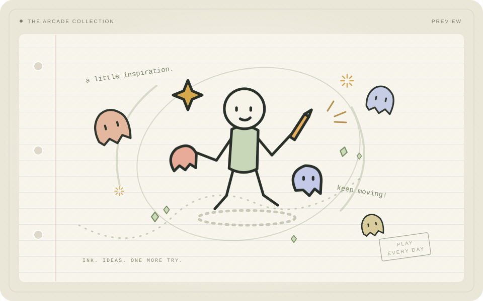
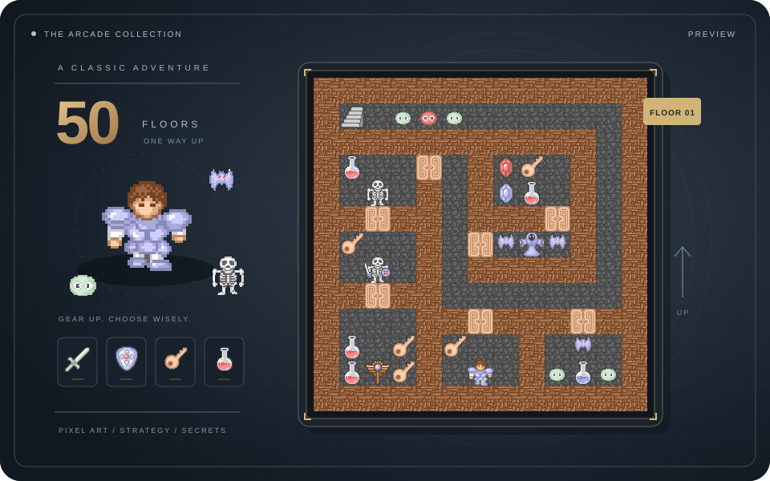
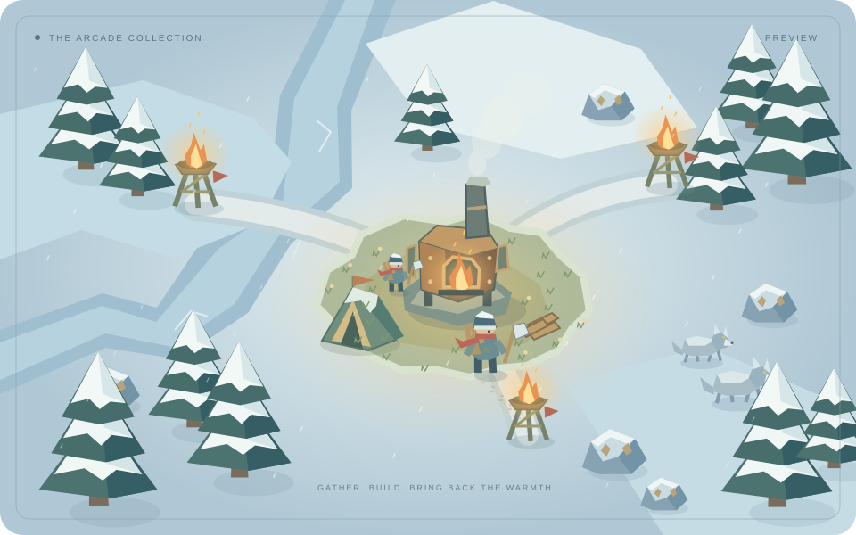

NO. 01经典 / 无尽  把每一次闪避，写成下一秒的可能。 PAPER SURVIVOR纸上幸存者生存 · 动作 一张纸，一场停不下来的生存挑战。躲开敌潮，收集成长，在经典与无尽模式里刷新自己。 自由走位自动攻击经典闯关 / 无尽挑战 开始生存LET’S PLAY
NO. 0250 层冒险  每一把钥匙，都通向一种选择。 TOWER OF THE SORCERER魔塔五十层的远征策略 · 冒险 熟悉的像素高塔，重新启程的勇者。计算战斗、规划路线，让有限的生命带你走得更高。 完整 50 层经典剧情本地存档，随时续玩 踏入魔塔LET’S EXPLORE
NO. 03雪原重建  把冬天，一点点推回去。 LAST EMBER最后一炉火经营 · 生存 小镇只剩一炉余火，温暖却还没有结束。采集资源、升级熔炉、修复供热塔，让春天重返雪原。 采集与建造点亮暖域本地存档，慢慢探索 点燃炉火FIND YOUR WARMTH